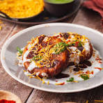

Aloo Tikki Recipe
A crispy and delicious Indian street food snack.
Preparation Time
- Prep: 30 minutes
- Cook: 20 minutes
Ingredients
- 4 large potatoes, boiled and mashed
- 1/2 cup green peas, boiled
- 1 onion, finely chopped
- 1 green chili, finely chopped
- 1 teaspoon ginger-garlic paste
- 1 teaspoon cumin seeds
- 1/2 teaspoon coriander powder
- 1/2 teaspoon red chili powder
- 1/4 teaspoon garam masala
- Salt to taste
- Oil for frying
- Breadcrumbs, for coating
Instructions
- Mix the Ingredients: In a large bowl, combine the mashed potatoes, green peas, chopped onion, green chili, ginger-garlic paste, cumin seeds, coriander powder, red chili powder, garam masala, and salt.
- Shape the Tikkis: Divide the mixture into equal portions and shape them into round tikkis.
- Coat the Tikkis: Coat the tikkis in breadcrumbs.
- Fry the Tikkis: Heat oil in a deep frying pan. Fry the tikkis until they are golden brown and crispy on both sides.
- Serve Hot: Serve the hot tikkis with green chutney and tamarind chutney.
Nutrition
| Calories | 250 kcal per serving |
|---|
| Protein | 8g |
|---|
| Carbs | 35g |
|---|
| Fat | 10g |
|---|